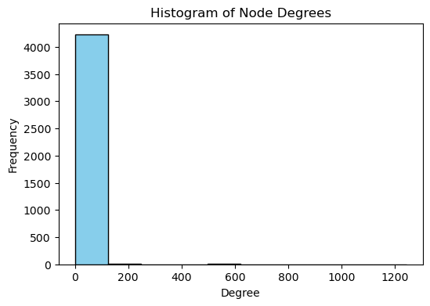
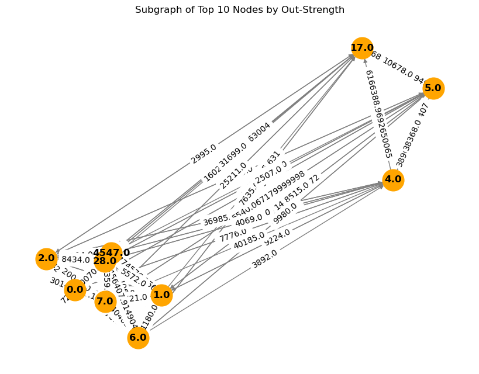

You will analyze a dataset representing payments between agents. Each row represents a payment with the following columns:
Sourceid: ID of the agent initiating the payment.
Targetid: ID of the recipient agent.
Weights: The amount of money transferred (payment amount).
1. Preprocessing
Load the dataset into a pandas DataFrame and inspect the first few rows. Rename columns to source, target, and weight for consistency.
Only keep edges where the weight is greater than or equal to 1000. This helps focus on significant payments.
Using NetworkX, create a directed graph from the filtered data. Each row should represent an edge from source to target with a weight.
Create an initial visualization of the full graph with spring_layout, where node sizes are proportional to their degree centrality. Set edge thickness proportional to the weight.
Q1: Based on the visualization, do you observe any highly connected nodes? How would you interpret these nodes in the context of payment flows?
Q2: Are there any isolated clusters or communities that stand out visually? What might these clusters represent in real-world terms?
import pandas as pdimport networkx as nximport numpy as npimport matplotlib.pyplot as pltdf = pd.read_csv('payments_dataset.csv', delimiter=';')df.columns = df.columns.str.strip()df.rename(columns={'Sourceid': 'source', 'Targetid': 'target', 'Weights': 'weight'}, inplace=True)print(df.head())df = df[df['weight'] >=1000]print(df)G = nx.DiGraph()G.add_weighted_edges_from(df[['source', 'target', 'weight']].values)pos = nx.spring_layout(G, seed=42)plt.figure(figsize=(10, 8))nx.draw(G, pos, node_size=[100+1000* nx.degree_centrality(G)[n] for n in G], edge_color='gray', width=[0.5+2* d['weight']/max(df['weight']) for u, v, d in G.edges(data=True)], with_labels=False, node_color='skyblue', alpha=0.7)plt.title("Initial Visualization of Payment Network")plt.show()
Compute the following properties of the graph: - Number of nodes - Number of edges - Average degree - Create a histogram of node degrees (number of edges connected to each node). First calculate the degree (in-degree + out-degree) for each node, then plot the histogram. - Calculate the density of the graph. - Calculate the reciprocity, which measures the proportion of edges that are bidirectional (if an edge exists from node A to node B, does one also exist from B to A?). Hint: Use nx.reciprocity() for directed graphs. - Find nodes that have no incoming edges (in-degree = 0) and those with no outgoing edges (out-degree = 0). Print their IDs and counts.
Q3: What does the average degree tell you about the structure of the network?
Q4: If a node has a high degree, what might that indicate about its role in this payment network?
Q5: How might having a few high-degree nodes affect the network’s resilience? Would the network be more vulnerable if these high-degree nodes were removed?
Q6: Is there a high level of reciprocity? How does this relate to the nature of payment flows between nodes?
Q7: If many nodes have no incoming or outgoing edges, what might that suggest about the connectivity of the network?
num_nodes = G.number_of_nodes()num_edges = G.number_of_edges()avg_degree = num_edges / num_nodesprint(f"Number of nodes: {num_nodes}")print(f"Number of edges: {num_edges}")print(f"Average degree: {avg_degree}")# histogramdegrees = [deg for _, deg in G.degree()]plt.figure(figsize=(6, 4))plt.hist(degrees, bins=10, color='skyblue', edgecolor='black')plt.xlabel('Degree')plt.ylabel('Frequency')plt.title('Histogram of Node Degrees')plt.show()# densitydensity = nx.density(G)print(f"Density of the graph: {density}")# reciprocityreciprocity = nx.reciprocity(G)print(f"Reciprocity of the graph: {reciprocity}")# no in- out-no_incoming = [node for node in G.nodes if G.in_degree(node) ==0]no_outgoing = [node for node in G.nodes if G.out_degree(node) ==0]print(f"Count of nodes with no incoming edges: {len(no_incoming)}")print(f"Count of nodes with no outgoing edges: {len(no_outgoing)}")
Number of nodes: 4243
Number of edges: 10303
Average degree: 2.4282347395710584

Density of the graph: 0.0005724268598705937
Reciprocity of the graph: 0.14015335339221585
Count of nodes with no incoming edges: 3089
Count of nodes with no outgoing edges: 106
3. Weighted Analysis
Calculate the in-strength and out-strength of each node, and find the top 8 nodes with the highest total strength
Calculate the average in-strength and average out-strength of the nodes.
Calculate the standard deviation of the edge weights. A higher standard deviation indicates more variability in payment amounts. Comment on whether the payments are relatively uniform or highly variable.
Select the top 10 nodes by out-strength and visualize them as a subgraph. Color these nodes differently and show the edge weights.
Q8: Nodes with high in-strength or out-strength represent significant “payment hubs” or “payment distributors.” Can you identify these nodes? What real-world roles might they play?
# in and out strength top 8in_strength = {node: G.in_degree(node, weight='weight') for node in G.nodes()}out_strength = {node: G.out_degree(node, weight='weight') for node in G.nodes()}total_strength = {node: in_strength[node] + out_strength[node] for node in G.nodes()}top_8_strength =sorted(total_strength.items(), key=lambda x: x[1], reverse=True)[:8]print("Top 8 nodes by total strength:", top_8_strength)# avarage in and out strengthavg_in_strength = np.mean(list(in_strength.values()))avg_out_strength = np.mean(list(out_strength.values()))print(f"Average in-strength: {avg_in_strength}")print(f"Average out-strength: {avg_out_strength}")# standard deviationweight_std_dev = df['weight'].std()print(f"Standard deviation of edge weights: {weight_std_dev}")if weight_std_dev > df['weight'].mean():print("Payments are highly variable.")else:print("Payments are relatively uniform.")# top 10 nodes out-strengthtop_10_out =sorted(out_strength.items(), key=lambda x: x[1], reverse=True)[:10]top_10_nodes = [node for node, _ in top_10_out]subgraph = G.subgraph(top_10_nodes)pos = nx.spring_layout(subgraph)plt.figure(figsize=(8, 6))nx.draw(subgraph, pos, with_labels=True, node_color='orange', node_size=700, edge_color='gray', font_weight='bold')edge_labels = nx.get_edge_attributes(subgraph, 'weight')nx.draw_networkx_edge_labels(subgraph, pos, edge_labels=edge_labels)plt.title("Subgraph of Top 10 Nodes by Out-Strength")plt.show()
Top 8 nodes by total strength: [(0.0, 341240571.23096794), (4547.0, 246131338.89006302), (5.0, 207905240.60187095), (17.0, 169594421.02847004), (6.0, 148151943.737947), (4.0, 147665662.56326798), (2.0, 144216823.908849), (8.0, 132960659.041529)]
Average in-strength: 426277.93115615525
Average out-strength: 426277.9311561553
Standard deviation of edge weights: 1668397.7113857793
Payments are highly variable.

4. Centrality Measures
Alternative Centrality Measures
Calculate the following centrality measures and list the top 5 nodes for each: - Degree centrality - Closeness Centrality - Eigenvector Centrality: shows nodes that are connected to other important nodes. - Load Centrality: Measures the fraction of all shortest paths passing through a node, emphasizing the node’s role in connecting different parts of the network.
Create a scatter plot comparing degree centrality and eigenvector centrality for each node. Highlight the top 5 nodes for each centrality measure and label them.
Q9: Which centrality measure do you think best reflects the “influence” of a node in a payment network? Why?
Q10: How does the correlation between degree centrality and eigenvector centrality help you understand the network’s structure?
Top 5 by Degree Centrality: [(0.0, 0.2927864214992928), (8.0, 0.1885902876001886), (17.0, 0.1848184818481848), (4547.0, 0.14285714285714285), (6.0, 0.14144271570014144)]
Top 5 by Closeness Centrality: [(0.0, 0.5176010211858625), (4547.0, 0.48314477178724247), (8.0, 0.4808583203736152), (3.0, 0.4780737626009124), (2.0, 0.4750933243254961)]
Top 5 by Eigenvector Centrality: [(0.0, 0.21819153554982326), (17.0, 0.20128193274517905), (4547.0, 0.19747698103328284), (8.0, 0.18946179339723365), (6.0, 0.18797000353623358)]
Top 5 by Load Centrality: [(0.0, 0.08197213283976615), (17.0, 0.043855567430209005), (2.0, 0.042420294803678045), (8.0, 0.04229906449172407), (6.0, 0.03396755011671321)]
import matplotlib.pyplot as pltdegree_vals =list(degree_centrality.values())eigenvector_vals =list(eigenvector_centrality.values())plt.figure(figsize=(10, 6))plt.scatter(degree_vals, eigenvector_vals, color='skyblue', edgecolor='black')plt.xlabel("Degree Centrality")plt.ylabel("Eigenvector Centrality")plt.title("Degree vs. Eigenvector Centrality")# Highlight and label top 5 nodes in both metricsfor node, centrality in top_5_degree: plt.annotate(node, (degree_centrality[node], eigenvector_centrality[node]), color='red')for node, centrality in top_5_eigenvector: plt.annotate(node, (degree_centrality[node], eigenvector_centrality[node]), color='blue')plt.show()
5. Community and Core-Periphery Structure
Convert the directed graph to an undirected graph and apply the Louvain method for community detection. List the number of communities detected and the size of each.
Hint: You can use community_louvain.best_partition() from the python-louvain package.
Find the k-core of the network for k=2 and determine the core and periphery nodes.
Calculate the average clustering coefficient for the core nodes and compare it with that of the periphery nodes.
Find the node with the maximum clustering coefficient.
Hint: Use nx.k_core() and nx.clustering().
pip install python-louvain
from community import community_louvainG_undirected = G.to_undirected()partition = community_louvain.best_partition(G_undirected)num_communities =len(set(partition.values()))community_sizes = {community: list(partition.values()).count(community) for community inset(partition.values())}print(f"Number of communities: {num_communities}")print("Sizes of each community:", community_sizes)
Number of communities: 10
Sizes of each community: {0: 1202, 1: 267, 2: 372, 3: 444, 4: 364, 5: 520, 6: 305, 7: 254, 8: 97, 9: 418}
k_core = nx.k_core(G, k=2)core_nodes =set(k_core.nodes())periphery_nodes =set(G.nodes()) - core_nodescore_clustering = np.mean([nx.clustering(G, node) for node in core_nodes])periphery_clustering = np.mean([nx.clustering(G, node) for node in periphery_nodes])print(f"Core Nodes clustering coefficient (average): {core_clustering}")print(f"Periphery nodes clustering coefficient (average): {periphery_clustering}")clustering_coefficients = nx.clustering(G)max_clustering_node =max(clustering_coefficients, key=clustering_coefficients.get)max_clustering_value = clustering_coefficients[max_clustering_node]print(f"Node with maximum clustering coefficient: {int(max_clustering_node)} (value: {max_clustering_value})")
Core Nodes clustering coefficient (average): 0.7536314883581225
Periphery nodes clustering coefficient (average): 0.0
Node with maximum clustering coefficient: 42 (value: 1.0)
6. Bonus Questions
Analyze Network Robustness
Remove the top 5 nodes by betweenness centrality and analyze how the graph’s structure changes.
Calculate the new number of nodes and edges, as well as the network density, after these nodes are removed.
look at the size of the new SCC and compare it with the old one.
Q11: After removing the top 5 nodes by betweenness centrality, how has the network changed in terms of node count, edge count, and density?
Q12: How did the SCC changed? What is your interpretation?
betweenness_centrality = nx.betweenness_centrality(G)top_5_betweenness =sorted(betweenness_centrality.items(), key=lambda x: x[1], reverse=True)[:5]nodes_to_remove = [node for node, _ in top_5_betweenness]original_sccs =list(nx.strongly_connected_components(G))original_num_scc =len(original_sccs)original_largest_scc =len(max(original_sccs, key=len))print("Original Graph:")print(f"Number of strongly connected components: {original_num_scc}")print(f"Size of the largest strongly connected component: {original_largest_scc}")# Remove the top 5 nodes by betweenness centralityG_removed = G.copy()G_removed.remove_nodes_from(nodes_to_remove)# Analyze the modified directed graphnew_nodes = G_removed.number_of_nodes()new_edges = G_removed.number_of_edges()new_density = nx.density(G_removed)# Calculate SCCs for the modified graphnew_sccs =list(nx.strongly_connected_components(G_removed))new_num_scc =len(new_sccs)new_largest_scc =len(max(new_sccs, key=len))print("\nAfter removing top 5 nodes by betweenness centrality:")print(f"New number of nodes: {new_nodes}")print(f"New number of edges: {new_edges}")print(f"New network density: {new_density:.4f}")print(f"Number of strongly connected components after removal: {new_num_scc}")print(f"Size of the largest strongly connected component after removal: {new_largest_scc}")
Original Graph:
Number of strongly connected components: 3211
Size of the largest strongly connected component: 1033
After removing top 5 nodes by betweenness centrality:
New number of nodes: 4238
New number of edges: 6301
New network density: 0.0004
Number of strongly connected components after removal: 3858
Size of the largest strongly connected component after removal: 381